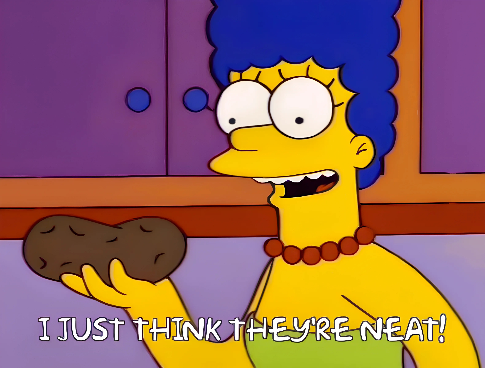
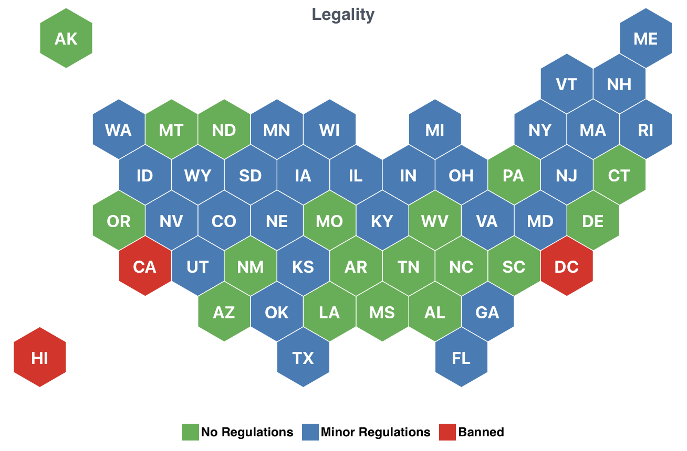

Applying to Graduate School in Ecology, Evolution, and Related Fields
- Come to our webinar: October 24, 2024, 11 am US Eastern, 8 am US Pacific, 15:00 UTC
- Zoom link: https://tiny.utk.edu/applyeeb (renders to https://tennessee.zoom.us/j/86340866401)
- ICS appointment to add to your calendar
- Poster PDF to print or share with others
- Presenters: Brian O’Meara and Xingli Giam, both of the Dept. of Ecology & Evolutionary Biology, University of Tennessee, Knoxville.
This page has info on how to apply to ecology, evolutionary biology, behavior, and related fields for graduate school (note it will keep being added to in the run up to our Oct 24 webinar). Our focus is the US. The goal is to expose some of the “hidden curriculum” – some of the information that some people know (for example, if their parents are professors) but might not be known to those with different backgrounds. Note our potential conflicts of interest as faculty who mentor grad students and also serve on an admissions committee: we could inadvertently be painting a too positive picture of the process. There can also be substantial differences across fields: some of this could apply to a PhD program in history, for example, but some might be terrible. We also come with particular backgrounds, perspectives, and experiences: they might not match your experience or predict how things will work for you. Searching for “hidden curriculum” and “graduate school” will bring up many more resources – we undoubtedly have missed some major issues. We also describe things as we think they are, not as we think they should be.
What is graduate school?
Graduate school is where you study for a Masters or PhD. In ecology and evolutionary biology (EEB), a Masters can be coursework-based (like most bachelors degrees: take this many classes, have a high enough average, get a degree) or research-based (like a PhD, but shorter and with less research). A PhD is a research degree: you do a lot of research, write a dissertation, and defend it. You also take classes, but the focus is on research. A Masters degree typically takes 2-3 years, a PhD 5-6 years. Sometimes people get a Masters degree while on the way to a PhD; sometimes they get a Masters at one institution and a PhD at another; sometimes they go directly from undergrad to a PhD program.
Success in undergrad is generally getting good grades. Success in grad school in this field is largely about getting good research done and published. Failing classes is still bad, but whether you got an A or B- in stochastic processes will have little effect on your future career. This can require a shift in thinking.
How much does it cost?
Coursework-based Masters, especially if the target audience is professionals who need a degree for professional development, will usually charge tuition. Research-based Masters, and PhD programs, actually pay you to go. Technically, this is usually pay for teaching (as a teaching assistant, or “TA” or “GTA”) and/or for doing funded research (a research assistant, an “RA” or “GRA” [not “RA” as in “resident advisor”, a person who helps students staying in dorms]). This usually covers tuition, a modest stipend, and enrolls you in a healthcare plan. It may or may not cover fees, which can sometimes be substantial. https://www.phdstipends.com has crowd-sourced information on stipends PhD students a paid in different schools and programs so you can get a sense of the range of values; most programs will also put their base stipend on their websites. Note that the stipends on PhDStipends.com might include bonus fellowships, or might be for students on research assistantships where the base pay is higher (because that is how the grant budget is written) – you might get a different amount. Stipends in EEB might be as low as $20,000 but go as high as $45,000 or more. However, cost of living can vary dramatically, as well: a moderate stipend in one place might allow grad students to buy a house, while in another a higher stipend might still require multiple roommates in a small apartment. One useful website is https://livingwage.mit.edu, which calculates living wage in various places: you can multiply the hourly living wage by 2080 to get the annual living wage. For example, as of when our website was last updated, the living wage in Cambridge, MA, was $30.04 (so annual cost of $62,483) while the county containing Oxford, MS was $21.95 (annual cost of $45,656). Thus, a $50K stipend in Mississippi might be more comfortable than a $60K stipend in Massachusetts (though stipends will generally be far lower in EEB).
Healthcare in the US is also a varied system. Eyes and dental care are treated separately from the rest of the body (and often are not covered by default), having a dependent spouse and/or children are additional costs, and there may be different deductibles and copays for treatment. You should be able to get details of what is included and costs when you get an offer of admission.
Note that in most cases, the offer of admission and offer of support (as a TA and RA) come in together, but you could in most cases choose to separate them (though some programs do require teaching a semester or two). For example, if you happen to be wealthy, you could choose to pay your own tuition and not take a TA position. This is very rare.
Some institutions charge application fees to even apply. Some programs allow potential applicants to request a waiver; if not, some professors may have funds in their budget that will ccover this. One important lesson in academia: there are sometimes small pots of money around to handle issues, but they can often only be found by asking.
What do you want to do when you graduate?
The faculty in EEB programs have careers as faculty in EEB programs (though some may have had other careers earlier). They are good at that (every person with a faculty job has been selected from dozens to many hundreds of applicants for that position, and there are then further hurdles like tenure). Historically, a priority has been to train students as potential future faculty. There are not enough faculty jobs for all students who want them, so there is increasing awareness of so-called “alternative” careers (look for the hashtag #altac on social media). There are also very real concerns about a “leaky pipeline” – the factors that push people from historically excluded groups out of the track leading to academic faculty jobs (racism, sexism, ableism, and much more, including structural factors that reinforce these).
However, for many students, jobs other than faculty ones are not the reluctantly accepted viable alternative – they are the goal. Degrees in EEB can lead to work at nonprofits protecting the environment, government agencies conserving natural resources, helping companies reduce their environmental impact, science communications, and much more.
It is important to consider what you want to do when you graduate, as this affects which mentors and programs you prioritize as well as how you work in grad school. If you want to be a faculty member, a program that focuses on training for this could be a good fit. If you want to work at a government agency, it could be important to take courses that the agency wants to see on a transcript. Will your mentor support you in your career goal? What if your career goal changes?

Should you go?
Grad school in EEB might be far cheaper than law school, med school, vet school, or business school, but it is still a substantial investment of time and forestalls pursuing other opportunities (and there can be a concern about being “overcredentialed” for some jobs). It is important to start with a goal – it could be a particular kind of job, to dive deep into a biological question, or to get some particular skills. It is often unwise for it to be a default option.
The rest of this page has lots of pros and cons discussed, so I’m not going to embed them here. One thing to consider not mentioned explicitly elsewhere is family support. Can and will your partner move to where you are considering grad school? Will your broader family give you grief for “still being a student” a decade after people you went to high school with are a decade into their careers, and if so, does this matter to you? Grad school itself will often be stressful (important exams, papers and grants getting rejected, career anxiety, and more), and having a supportive family can be a big help. Letting them know likely timelines can help manage expectations – for example, for those wanting to go into a faculty position, it can be good for their families to know up front that this means multiple years in grad school, then one or two multiple year postdocs (typically somewhere else), and then getting a job at yet another place – early 30s for a “first job” is common. (I personally think this system is bad and drives out many people who don’t have geographic flexibility and resources to handle many years of low and uncertain income, but that is different from saying that this is not a frequent path).
Masters or PhD?
- First, for your career goals, what do you need? A PhD is essential for some careers, an actual impediment for others.
- A Masters is coursework, one or more papers you lead, and 2-3 years; a PhD is coursework, 3+ papers you lead, and 5-6 years.
- You do not need to do a Masters before a PhD. Among a pool of applicants for a PhD, it makes you more competitive (“look, they can do research and succeed in grad school”) but it is not necessary in most programs. If you know clearly what you want to do, going directly into a PhD can be a good choice.
- If you are not sure what you want, or if you are switching to an area different from your past experience, a Masters can be important – learn skills and the field before a half decade commitment.
- There are often ways to transition from a Masters to a PhD, but this is not guaranteed. There can also be ways to transition from a PhD to a Masters – if you decide your goals are better met by a Masters, you want to leave the program for a different mentor or area, and other reasons. An important thing to note: almost no one will know whether you started seeking one degree and ended up with another. In theory they might be able to look at archived versions of a web page, but few have time for that – they’re just going to see on your CV when you got each degree, maybe (depending on how you choose to format it) when you started each degree.
What is the timeline for applying?
Most programs start in the US Fall semester or quarter (which can be as early as August). The process to get into grad school starts nearly a full year before this:
- September-October a year before the start: start contacting potential mentors. Also look to see if things like the GRE are required.
- By October: consider applying for the NSF Graduate Research Fellowship Program (GRFP). A two page research proposal, three page personal statement, letters of rec and some similar materials, and you have a chance to get three years of funding for grad school. Check for the deadlines (they are very strict) and eligibility (you can only apply twice, and only if you are a US citizen or permanent resident).
- By December (but check to make sure no earlier deadlines): Formally apply to programs. Make sure you have strong letters of rec lined up.
- January-February: Interviews. Some programs will fly you out (they pay, usually) to visit the campus and meet with faculty and students, some will do this virtually, and some will not do this at all. These visits can be very informative; just remember that they are evaluating you while you are evaluating them. Are you curious? Will you work hard?
- January-March: Offers of admission. You might get an unofficial offer, but check to see what your official offer letter includes (often details of funding).
- April 15: Deadline to respond to offers of financial support, for all universities signed onto the April 15 Resolution. This keeps universities from using high pressure tactics to get you to commit before other offers come in. That said, if you get an offer before this you definitely will not accept (i.e., if you already have a better offer from another school, but are waiting to hear from more), it is kind to let the school know so they can offer the spot to someone else. If a university is giving you a deadline before April 15, that is a warning sign about that institution.
- April-August: New offers might still go out as people decline offers, perhaps other students graduate earlier than expected, etc. So if you have not gotten an offer by mid-April, it still might be possible, though less likely.
Watch for when your program expects you to start: they might have training before the semester starts. Note that in the US rentals typically require first and last month rent, plus a security deposit before you can move in; often universities will not start paying you until two or four weeks after you begin working (but fees, including for parking, might be due on the first day of the semester).
What do applications entail?
The formal application will usually include:
- Transcripts: You will need to get these from your undergraduate institution. You might also need to get them from any other institutions you attended.
- Letters of recommendation: These can help give context for your application. Note that different cultures and careers have different norms for letters – an admissions committee should take these into account. Applicants often have a choice on whether to waive their right to see the letters. It is perceived that letters are more honest if the applicant waives this right, and most applicants choose to waive it. A key thing is to make sure your letter writers know you well and can write a strong letter. Especially valued are ones that can speak to your research abilities and drive.
- Essays: These will often be a personal statement and research statement. The personal statement may include why you want to go to grad school and your research experiences. It can be useful to mention not just what you did but why you did it and what you learned from it. Good programs should recognize that opportunity to do research is not uniform for everyone: just because you had to get a paying job over the summer rather than volunteer or even pay for a research experience somewhere does not mean you are not a good candidate. A research statement is what you want to research, why, and why at your target institution. This should be tailored for each institution. Make sure to double check that you have the right institution and mentor in each essay: you should be applying to multiple programs, and everyone knows it, but it’s still a bad look to have a mismatch between the essay and where you’re applying – no one wants to feel like they are a backup. Some institutions may have a diversity statement. Think of this as a place to highlight verbs: what concrete steps have you taken to make the field more inclusive, to support your peers, to make your community better? What will you do in the future? How and why has your lived experience informed you of problems to address? Just like your research statement is not “I love dophins” but why and how you will study dolphin phylogeography, which addresses a core institutional goal of doing meaningful research, the diversity statement is not a statement of beliefs but examples of past and planned actions that show how you will contribute to the institution’s goals in this area.

How to pick where to apply?
There is a lot of pressure to rank colleges for undergraduate programs: there are companies that make a lot of their money comparing different colleges, and there have even been allegations of cheating by colleges. It is a big deal if a college drops or rises multiple places on the US News ranking, for example. Going to a “top” college has a cachet that draws students and arguably has a major impact on future career options.
Some groups do attempt to rank graduate programs in the same way, but they have much less impact. For one thing, it is hard to compare programs: how does a general biology program with faculty ranging from cell biology to pesticide development to fish anatomy compare to a specialized systematic botany program? For another, the mentor matters a lot more to peers than the college. For undergrad, you might hear “I studied at U. of Foo” but for grad school you are more likely to hear “My advisor was Dr. Smith.” Small sample size can also be a big issue: a set of three or four faculty in an area can make that school a “powerhouse” in that area – when two move away, the program changes a lot.
So the first question to ask is, “Who do I want as an advisor?” Then see if the program, location, and more can work for you.
In EEB it’s most common to first identify one or two mentors in a program and join their lab directly (while still being admitted to a program overall). Some programs, especially more general biology programs, have rotations where students work for a substantial period of time in different labs before an advisor is identified. In either case, it is still good to reach out to potential mentors early (and try them again if at first you do not get a reply: often they are in the field or otherwise inaccessible).
How to pick a mentor?
Some things to consider:
- Research interests: Are they doing the sort of work you want to do? Are they doing it recently? Some people shift research interests, go into administrative work, and similar, so their current focus might not be what you need. https://openalex.org and https://scholar.google.com/ can be useful for finding interesting people.
- Lab outcomes: Do their students get positions? Are they the sort of position you would want? Do their students graduate, drop out, or flee the lab? (https://web.archive.org can be good for looking at older versions of lab websites: who was on the “People” page but isn’t still there or on the “Alumni” page?). You should reach out to current and past students.
- Lab size and career stage: Do you want to enter into a productive machine with a lot of postdocs and students who churn out papers but possibly less attention per student, or a small lab where there might be more attention but fewer projects to plug into? Is the professor going to be around for the duration of your degree or will they retire or move?
- Are they humane?: There is a lot of misconduct in academia. Power dynamics can be extreme, which can create an environment where this can happen and be underreported or be unaddressed when reported. You might find public information on misconduct (the https://academic-sexual-misconduct-database.org can be useful for this), but most is not public. Try to get a sense of this from your interactions with the potential mentors, their current and past lab personnel, other people in their department, and trusted people in the field. Not every whisper is true, but many are. Make sure not to endanger anyone who gives you information: “I heard from one of your students that…” puts that student at risk.
- Money and other resources: Do they have funding? This will be on their CV; you can also get information from https://www.nsf.gov/awardsearch/ (just for NSF grants; they may have money from other sources). How do their students get funding for travel, for equipment, for fieldwork? Funding can be especially important in programs where a faculty member is expected to fund their students at least part of the time with research funds as RAs: is it a safe bet for you to assume they will bring in enough to cover you?
Mental health in grad school
Studies show grad school can be terrible for mental health. This does not mean people facing mental health challenges should avoid grad school, but it does mean that everyone should be aware of risks and consider strategies to mitigate them. If people given a certain treatment had depression five times higher than the general population, they should know this before starting the treatment: grad school arguably has this effect (42-48% of Berkeley STEM grad students were depressed in a study, while only 8.3% of US adults in general). Programs and mentors should be addressing these, as well – some are, others not so much. Does the program and mentor show awareness of this? Are there good resources? Do current students feel supported?
Given persistent (but improving) stigma associated with mental health, take care in when and how to get information on this. For example, there is less risk (but not no risk) in asking questions about this or other things that might receive pushback after you have an offer of admission.
Location
Grad school is a place you will physically live in for multiple years. You, and any loved ones coming with you, have to be able to live there and be reasonably happy. Part of this is climate: if you hate cold, certain parts of the US might not be fun for you. Housing costs, availability of childcare, public transportation, access to your favorite activities, and more can all be important.
One thing that people might not expect is the heterogeneity of laws and customs in the US. Some laws are federal; some are state; some are local; and some policies are set by your institution. As a trivial example, there is no US federal law on whether someone can keep a ferret as a pet (but there might be a law about whether it can be brought onboard a commercial aircraft, or other limits). Some states have laws allowing them, some (like California) forbid them. In the states that do allow them, some cities could prohibit them: no ferrets in New York City but they are ok elsewhere in the state (info from here). Even if the city allows them, your college might or might not allow pets in student offices. So if you really want to keep Mr. Fuzzysnake Magicpants on your desk, you have to look at all these different levels to decide if this is a place where you can. And note that any of these policies can change in the future.

There are many more serious issues that can vary dramatically by location in this way. There are heterogeneous policies on weapons, reproductive healthcare access, gender-affirming care, legality of certain drugs, rules on protests, and more. Some people don’t care about these issues; for others they might be critical (and in different directions depending on the individual). Consider what will be important to you and your loved ones when comparing locations. Remember the different levels of policy: an institution’s leadership might strongly favor one particular policy, but that might be moot if a law changes at a higher level. Even if your potential advisor is very aligned with your priorities, they may not be in control of the policies that affect you and cannot make any promises. Also note that institutional or higher level policies may also drive what is covered in the employee healthcare plan.
If there are particular issues important to you, there are generally national advocacy groups on all sides of the issues that typically publish guides to state laws and policies. Looking for local news articles about the area and your issue can also be informative.
Safety
There are many dimensions of safety. There is the obvious physical lab safety: is there a culture of safety? Do fume hoods work, does the roof leak onto equipment, are hazards identified? However, especially in ecology and evolution, fieldwork can be even more dangerous. See this list maintained by Richard Conniff, ranging from 1644 up to the present day. Some risks are common to all people working in the field (car accidents, for example), some may vary based on research focus (handling venomous snakes), but some vary in risk based on individual identities or others’ perceptions of their identities (see Demery & Pipkin (2020)). Is the potential mentor aware of this? Is the program? The US National Science Foundation, which funds a lot of EEB research, now requires field safety plans so people may be more aware of this, though perhaps not all axes.
Similarly, there can be safety issues due to verbal or physical assault in the community where you will live while not in the field. There can be general dangers (such as whether bicycling is safe on the local roads) but also ones where individuals can be targeted based on their identities. Peers may be able to give you a sense of this. While faculty may also experience these, note that their day-to-day lives can also be very different from those of most (but not all) grad students: being at work 9-5 and then driving home to a house in suburbia is different from working from noon until 8 pm and then walking back to an apartment (not that either is free from risk).
Visit day
If all goes well, you will be invited to a visit day (at many programs, though some have limited budgets and might have limits (perhaps not paying for airfare)). You are being evaluated by most people you meet. This is also a time for you to evaluate the program and lab climate. Good programs will also consider your needs on a visit: food allergies, time to nurse, etc.
Visit days normally include time to meet potential mentors, meeting other faculty, some info on the program as a whole, a tour of campus or the local area, social events, and time to meet current students. The time to meet current students is particularly valuable: how often do we have a chance to interview potential future versions of us to see if they are happy with their choices? The bulk of most visit days is meeting with individual faculty. Be ready to make a good first impression with a short synopsis about you and your research again, and again, and again. Also be ready with questions: scientists like questions, and they also tend to use this as conversational filler (“So… do you have any questions for me?”). Potential topics can include their current research (especially if you have done homework and know something about it), general questions about how the program works, questions about the area, and so forth. Asking personal questions (about family, politics, religion) is not typically appropriate.
One thing that comes up at faculty searches, and might also at visit days, are “illegal questions.” They may or may not formally be illegal, but they are generally considered inappropriate. These include questions about one’s spouse, children, and more. Applicants should not have to deal with them; odds are that someone will ask, so it is good to consider how to handle this.
A stressor can be what to wear. EEB programs often present as “we don’t care what you wear, we’re past such things” – but showing up in a full suit may get negative reactions. Cultures can vary based on the region, how the program is set up, and more. Photos of seminars or events at the program may help give a sense of the range of attire commonly worn.
Another issue can be alcohol: not everyone drinks for a variety of reasons (religion, health, pregnancy, individual choice, recovery, and more), none of which should require disclosure. In a well-run program, candidates should feel no pressure to drink, and there should be many non-alcoholic options at all events. If this isn’t the case, it can be a warning sign about the program’s culture. If you do drink, remember that this is essentially a day or two long job interview.
Do I need to take the GRE?
The GRE is a standardized test that was once a common requirement for applicants to graduate school. It tests for high school level math and stats, including understanding of even and odd numbers, perimeter of shapes, reading bar charts, and more; verbal reasoning including reading comprehension and completing text; and analytical writing. It is over $200, but some student in the US can get a discount to $100 (I could not find out information on international fee reductions). There are also subject tests.
Most programs have eliminated it in admissions: see Langin (2022). Its expense serves as a barrier to many students, and the information it purports to predict, grades in grad school, are not generally a major factor in research-based graduate programs. However, do check if the programs you are considering do still require it and whether, knowing this, you still want to apply.
Other resources
Here are some other resources. Note that as one moves further from ecology and evolution, the greater the chance that some of the advice does not apply. For example, Karen Kelsky’s book, The Professor Is In, has good advice on getting jobs after grad school, but includes information on how job interviews in hotel rooms work. That might be a thing in some fields (hopefully it has changed) but it is definitely not a thing in EEB (and if someone invites you to their room to talk about an opportunity during an ecology and evolution conference, that is a major red flag – report it to a conference safety officer [and if the conference does not have one, go to better conferences]).
- Carsen et al. (2021) “Advice on Applying to Graduate School in Ecology and Evolutionary Biology: How to Prepare and a Step-By-Step Guide” Bulletin of the Ecological Society of America 102(4): e01917 https://doi.org/10.1002/bes2.1917
- Estien et al. (2023) “Demystifying the Graduate School Application Process” Bulletin of the Ecological Society of America 104(1): e02029 https://doi.org/10.1002/bes2.2029
- Hampton and Labou (2017) “Careers in ecology: a fine-scale investigation of national data from the U.S. Survey of Doctorate Recipients” Ecosphere 8(12): e02031 https://doi.org/10.1002/ecs2.2031
- Botanical Society of America webinar on grad school: https://www.youtube.com/watch?v=la0z9yVu6n8
- NSF GRFP: https://www.nsfgrfp.org
- German Lab (UC Irvine) advice on applyng to grad school: https://german.bio.uci.edu/images/PDF/Application_Guide.pdf
- Casey Dunn (Yale) advice on applying to grad school: https://medium.com/@caseywdunn/applying-to-biology-phd-programs-58abece3284a
Jargon
As used within ecology and evolution in the United States
- ABD: All But Dissertation: A student who has completed all requirements for a PhD except the dissertation.
- ADA: Americans with Disabilities Act. US law that prohibits discrimination against people with disabilities.
- Assistant/Associate/Full/Emeritus Professor: At most institutions, the ranks of faculty. Assistant professors are usually tenure-track (a six year evaluation period, at the end of which someone either gets tenure or is fired), associate professors have tenure, full professors have been promoted to the highest rank, and emeritus professors are retired but retain some privileges. A few colleges use these terms differently.
- Defense: The final oral examination of a PhD dissertation. It often includes a public presentation followed by more intense questioning by a dissertation committee.
- DEI: Diversity, Equity, and Inclusion. Used similarly to JEDI (Justice, Equity, Diversity, and Inclusion) in other countries.
- FERPA: US law that protects student records.
- GRA: Graduate Research Assistant. Grad student paid to do research.
- GRFP: National Science Foundation program that funds graduate students. https://www.nsfgrfp.org
- GTA: Graduate Teaching Assistant. Grad student to be a teaching assistant.
- International: A student from outside the US.
- LGBTQIA: Abbreviation for Lesbian, Gay, Bisexual, Transgender, Queer, Intersex, and Asexual. Often expanded to LGBTQIA+ to include other identities, sometimes shortened to LGBT in older literature.
- NIH: National Institutes of Health. A major funder of health-related research in the US.
- NSF: National Science Foundation. A major funder of basic research in the US.
- Qualifying exam: A set of exams or other requirements that must be passed before a student can be admitted to PhD candidacy. Also called a comprehensive exam or prelim. This often includes a written and oral component; it is among the most stressful parts of grad school.
- Race: A social construct with substantial real world effects (for example, many US colleges would not enroll Black students until the 1960s; the first African American to get a PhD in evolution in the US only got it in 1988 Graves (2019)). See how the US NSF defined racial and ethnic categories in 2023 here; note that the particular set used by NSF are by no means universally accepted.
- Title VII: US law that prohibits discrimination in employment based on race, color, religion, sex, and national origin.
- Title IX: A US law that prohibits sex-based discrimination in educational programs receiving US federal funding (which is nearly all programs). Its two most commonly encountered effects are support for equitable access to sports and procedures for handling sexual harassment and assault. “Report this to Title IX” is a common phrase in the US for reporting sexual harassment or assault to the university office that handles these. Some institutions will publish transparency reports on number and disposition of Title IX reports (anonymized, but you can see how many are being reported and what happens).
- Tenure: An indefinite appointment (rather than a fixed duration contract) that can be terminated only for cause or under extraordinary circumstances (like closure of a program). Its goal is to allow faculty safety in pursuing controversial research and teaching. Sexual harassment and other misconduct can be cause for termination of tenure; doing research that suggests commonly accepted findings in the field are inaccurate is (ideally) protected by tenure.
Corrections / Additions?
If there’s something you disagree with on this page, or something missing, please reach out!
Email: mailto:omeara.brian@gmail.com
Pull request: https://github.com/bomeara/applyingtoeeb
Anonymous feedback: https://forms.gle/N6p2XHH2CSAnxNTc7